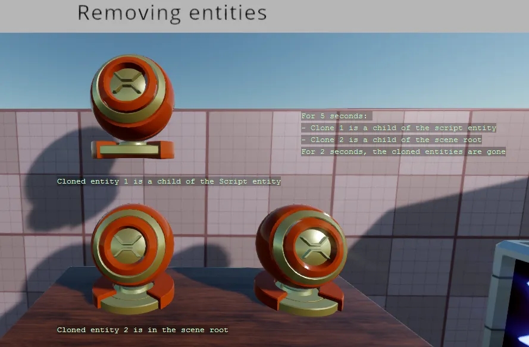

Removing entities
You can find this sample in the tutorial project: Menu → Removing entities
Explanation
This C# Beginner tutorial covers how to remove existing entities from the scene and how to remove an entity that is a child of another entity.
When we add entities to the Scene root we can remove that entity again by accessing the scene.Entities property. Entities that are added as children of other entities can be removed by accessing the children of an entity.

Code
using Stride.Core.Mathematics;
using Stride.Engine;
namespace CSharpBeginner.Code
{
/// <summary>
/// This script demonstrates how to remove an existing entity from the scene hierarchy.
/// <para>
/// https://doc.stride3d.net/latest/en/tutorials/csharpbeginner/removing-entities.html
/// </para>
/// </summary>
public class RemoveEntitiesDemo : SyncScript
{
public Entity EntityToClone;
private Entity clonedEntity1;
private Entity clonedEntity2;
private float timer = 0;
private float currentTimer = 0;
private float existTime = 4;
private float goneTime = 2;
private bool entitiesExist = false;
public override void Start()
{
CloneEntityAndAddToScene();
CloneEntityAndAddAsChild();
entitiesExist = true;
}
/// This method clones an entity, adds it as a child of the current entity
private void CloneEntityAndAddAsChild()
{
clonedEntity1 = EntityToClone.Clone();
clonedEntity1.Transform.Position = new Vector3(0);
Entity.AddChild(clonedEntity1);
}
/// This method clones an entity, adds it to the scene root
private void CloneEntityAndAddToScene()
{
clonedEntity2 = EntityToClone.Clone();
clonedEntity2.Transform.Position += new Vector3(0, 0, -0.5f);
Entity.Scene.Entities.Add(clonedEntity2);
}
public override void Update()
{
// We use a simple timer
timer += (float)Game.UpdateTime.Elapsed.TotalSeconds;
if (timer > currentTimer)
{
// If the entities exist, we remove them from the scene
if (entitiesExist)
{
// We remove the cloned entity that is a child of the current entity
Entity.RemoveChild(clonedEntity1); // Alternative: clonedEntity1.Transform.Parent = null;
// We remove the cloned entity from the scene root
Entity.Scene.Entities.Remove(clonedEntity2);
// We also need to set the clones to null, otherwise the clones still exist
clonedEntity1 = null;
clonedEntity2 = null;
entitiesExist = false;
currentTimer = goneTime;
}
else // If the entities don't exist, we create new clones
{
CloneEntityAndAddToScene();
CloneEntityAndAddAsChild();
entitiesExist = true;
currentTimer = existTime;
}
// Reset timer
timer = 0;
}
DebugText.Print("For " + existTime.ToString() + " seconds: ", new Int2(860, 240));
DebugText.Print("- Clone 1 is a child of the script entity", new Int2(860, 260));
DebugText.Print("- Clone 2 is a child of the scene root", new Int2(860, 280));
DebugText.Print("For " + goneTime.ToString() + " seconds, the cloned entities are gone", new Int2(860, 300));
if (entitiesExist)
{
DebugText.Print("Cloned entity 1 is a child of the Script entity", new Int2(450, 350));
DebugText.Print("Cloned entity 2 is in the scene root", new Int2(450, 600));
}
else
{
DebugText.Print("Cloned entity 1 and 2 have been removed", new Int2(450, 600));
}
}
}
}